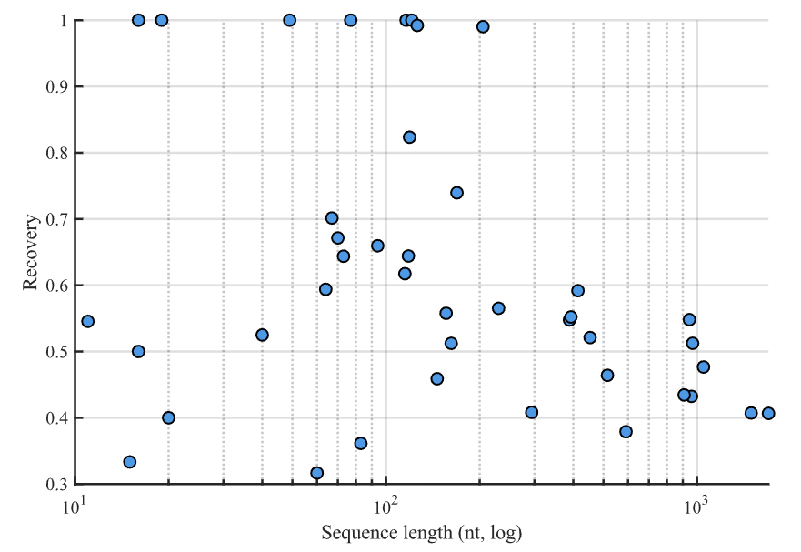

如何优化rna逆合成模型
这是一个很challenging的问题，别问，问就是啥都不会。
考虑到gRNAde: Geometric Deep Learning for 3D RNA Inverse Design论文的细节、思路非常清晰，且作者release了非常具象的source code，因而以gRNAde等state-of-the-art模型入手分析问题，作者代码开源地址：https://github.com/chaitjo/geometric-rna-design
服务器需要的一些设置
在这个过程中，注意一些tricks。由于租用的国内服务器与英国的环境不太一样，因此需要多使用数据盘而非系统盘。本项目最大的问题是作者的环境变量设置。
Python 3.10.12 and CUDA 11.8, numpy <2.0
1
|
git clone https://ghfast.top/github.com/chaitjo/geometric-rna-design
|
1
|
cd /root/autodl-tmp/geometric-rna-design
|
1
|
mamba create -p /root/autodl-tmp/rna python=3.10
|
如果需要激活环境，请注意相对路径：
1
|
mamba activate /root/autodl-tmp/rna
|
- 配置租用服务器版本环境变量，下方命令只对当前shell有效。建议写入bashrc或者利用作者给出的.env文件，记得
source ~/.bashrc
1
2
3
4
5
|
export PROJECT_PATH='/root/autodl-tmp/geometric-rna-design/'
export ETERNAFOLD='/root/autodl-tmp/geometric-rna-design/tools/EternaFold'
export X3DNA='/root/autodl-tmp/geometric-rna-design/tools/x3dna-v2.4'
export PATH="/root/autodl-tmp/geometric-rna-design/tools/x3dna-v2.4/bin:$PATH"
export PATH="/root/autodl-tmp/cdhit:$PATH"
|
而相应的，英国项目版本则按照：
1
2
3
4
5
6
7
8
|
export PROJECT_PATH='/home/remote1/geometric-rna-design/'
export DATA_PATH='/home/remote1/geometric-rna-design/data/'
export WANDB_PROJECT='gRNAde'
export WANDB_ENTITY='chaitjo'
export WANDB_DIR='/home/remote1/geometric-rna-design/'
export ETERNAFOLD='/home/remote1/geometric-rna-design/tools/EternaFold'
export X3DNA='/home/remote1/geometric-rna-design/tools/x3dna-v2.4'
export PATH="/home/remote1/geometric-rna-design/tools/x3dna-v2.4/bin:$PATH"
|
训练模型的注意事项
数据预处理
注意运行main脚本前，需要处理数据生成process.pt文件，并生成相应的das_split.pt文件。在这个过程中，需要安装USalign与qTMclust工具。一般而言，安装后者的同时会自动安装前者。
1
2
3
|
git clone https://github.com/pylelab/USalign.git
cd USalign
g++ -O3 -o qTMclust qTMclust.cpp -lm
|
之后就可以使用USalign -h与qTMclust -h命令来验证安装，记得查一下路径。在训练脚本里的相应位置路径用的相对路径可能报错，例如src/data/clustering_units.py记得修改。
处理数据成功
数据处理大概是把14000+条raw数据处理为3910条可用数据，因为raw数据有残缺的处理后筛查出去了，因而数据不多，正常。
有问题的数据
然后用notebook里的代码生成split文件。
模型使用与实验
作者给出.py脚本进行启动，或者用命令行如下：
1
|
python gRNAde.py --pdb_filepath data/raw/6J6G_1_L-E.pdb --output_filepath tutorial/lnc/po/114.fasta --split das --max_num_conformers 1 --n_samples 16 --temperature 0.5
|
使用效果如图：
利用gRNAde预测结构与序列
模型在长rna序列（100+nts）的时候性能会下降，虽然recovery保持良好但是二级结构自洽性得分SC Score呈现明显线性下降。
四个参数直观对比
SC Score(左)与Recovery(右)随Sequence的变化
另一个生成范式：RiboDiffusion
至于RiboDiffusion，其他部署方式一致但是环境设置如下：
1
2
3
4
5
6
7
8
9
10
11
12
13
14
|
conda create -n rna2 python=3.10 -y
conda activate rna2
pip install torch==1.13.1+cu116 torchvision==0.14.1+cu116 torchaudio==0.13.1 --extra-index-url https://download.pytorch.org/whl/cu116
pip install absl-py==0.15.0
pip install biopython==1.80
pip install dm_tree==0.1.7
pip install fair-esm==2.0.0
pip install ml_collections==0.1.1
pip install numpy==1.24.3
pip install scipy>=1.10.0
pip install tqdm==4.64.1
pip install torch-cluster==1.6.1+pt113cu116 -f https://data.pyg.org/whl/torch-1.13.0+cu116.html
pip install torch-scatter==2.1.1+pt113cu116 -f https://data.pyg.org/whl/torch-1.13.0+cu116.html
pip install torch-geometric==2.3.1
|
根据脚本运行，输出会出现一些问题，例如：
RiboDiffusion输出

RiboDiffusion模型的Recovery在对数坐标(上)与常数坐标(下)表示下随Sequence的变化